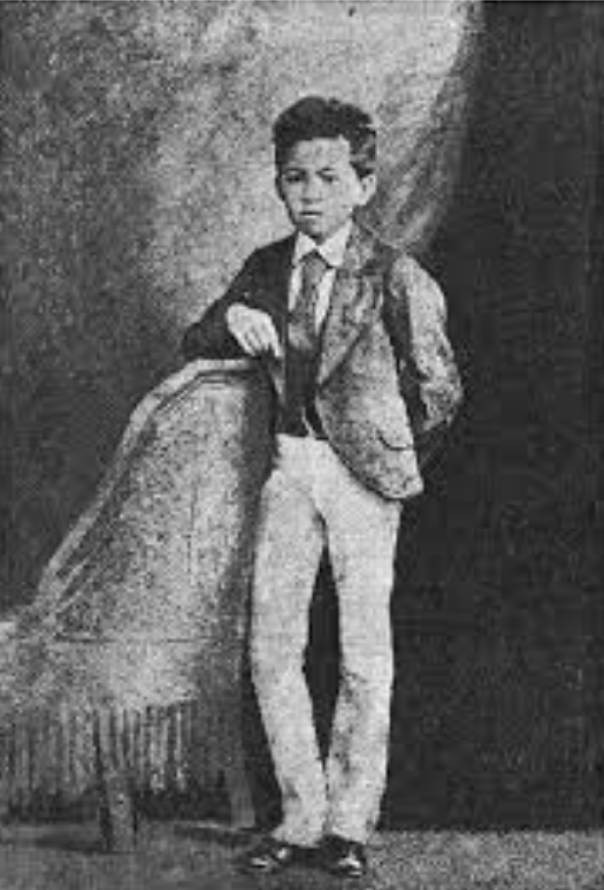
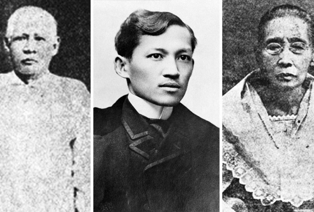
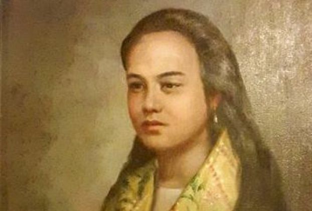
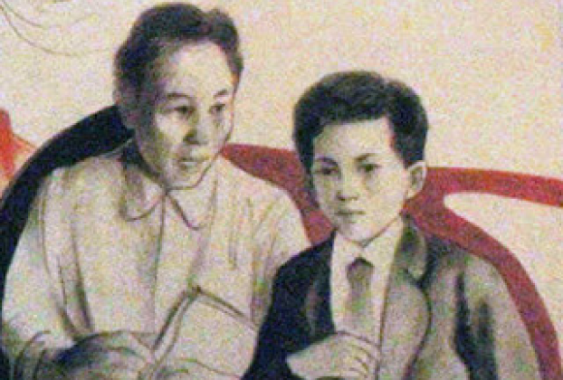

Childhood
José Rizal
01

Jose Rizal was born on June 19, 1861, in Calamba, Laguna,
Philippines. A young boy with a thirst for knowledge, he displayed
exceptional intellectual abilities from a young age. He was a
multi-talented prodigy, excelling in writing, poetry, sketching, and
sculpting.
Family
Family Influence
02

Influenced by his loving parents, Francisco Mercado (father) and
Teodora Alonso (mother), Rizal developed a strong sense of justice
and a deep appreciation for learning. His mother, Teodora,
particularly fostered his intellectual curiosity and nurtured his
artistic talents. A pivotal moment in his young life occurred in
1872, when his mother was falsely imprisoned on accusations of
poisoning. This experience fueled his growing resentment towards
injustice.
Early Romanticism
First Love
03

While studying at Ateneo de Manila, Rizal experienced his first love
with Segunda Katigbak, a childhood friend. However, due to societal
pressures and his burgeoning ambitions to study abroad, the
relationship remained unfulfilled. He poured his emotions into poems
and letters dedicated to Segunda, showcasing his early romantic
sensibilities.
Early Education
Education
04

Rizal's academic journey began in his hometown under the mentorship
of Maestro Justiniano Cruz. He later excelled at Ateneo de Manila
(1872-1882), graduating at the top of his class with numerous awards
in various subjects.
1882-1885
In May 1882, Rizal arrived in Spain to pursue further studies in
medicine at the Universidad Central de Madrid. While there, he
actively participated in the Propaganda Movement, a group of
Filipino intellectuals advocating for peaceful reforms in the
Philippines. Key figures in the movement included Marcelo H. del
Pilar and Graciano Lopez Jaena. He also began writing articles
for La Solidaridad, a newspaper that became a mouthpiece for the
reform movement.
1885-1888
Rizal further specialized in ophthalmology in Heidelberg,
Germany (1885-1886). He then traveled to France and Italy
(1887-1888), immersing himself in diverse cultures and honing
his intellectual perspectives.
During this time, he also developed romantic relationships with
several women. These relationships, though ultimately
unfulfilled, provided him with emotional companionship and
cultural exchange.